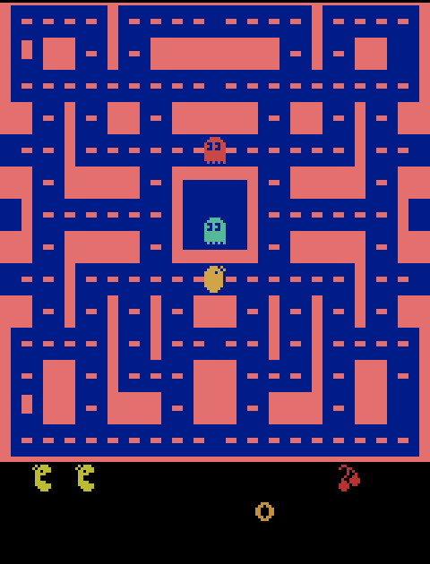
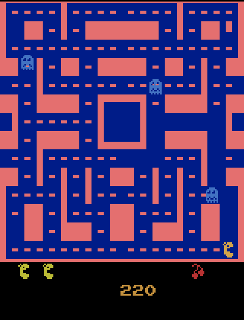
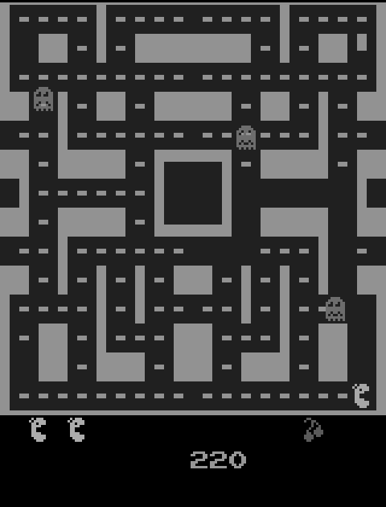
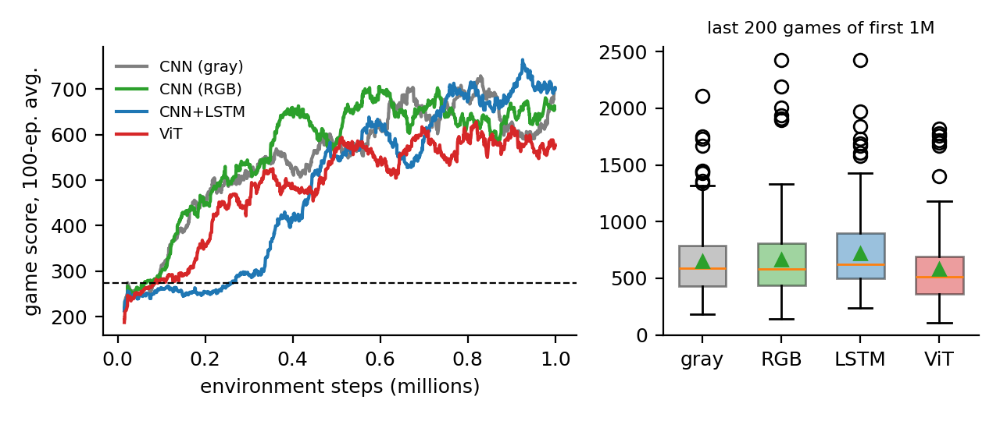
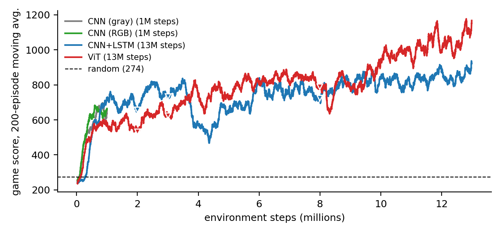
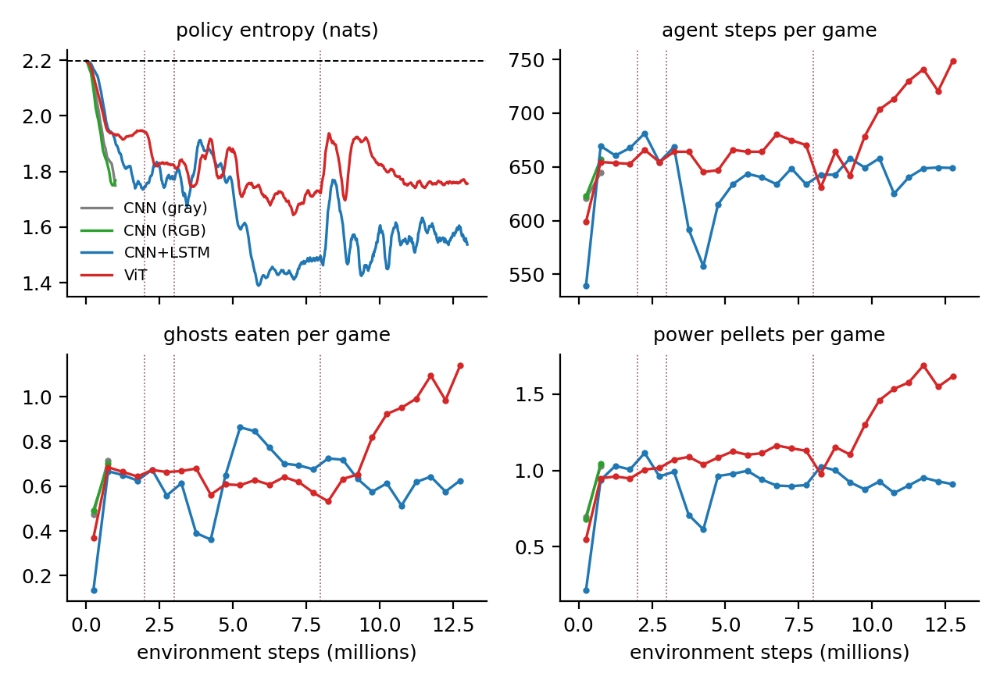
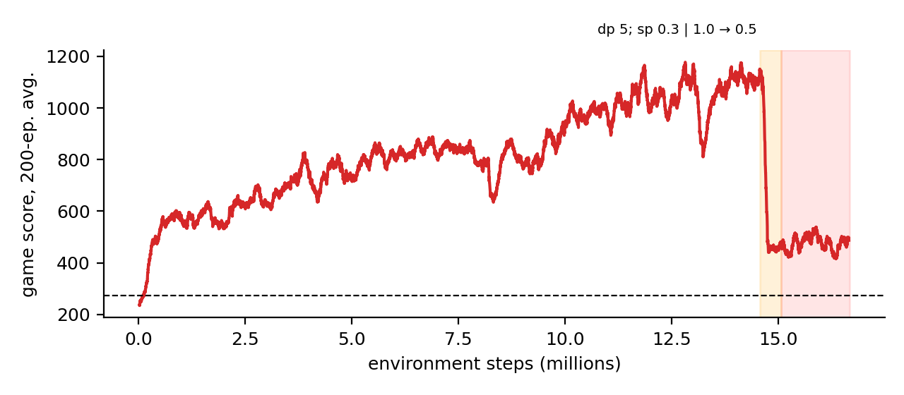

CS224N final project · custom
Reward shaping, input modality and architecture
in pixel-based PPO for Ms. Pac-Man
Le Minh Khoi (SE192396) · Pham Quang Huy (SE184775) · Ngo Quang Huy (SE190631)
Mentor: NamLG | github.com/Khoile5464/rel_ms_pacman
Question: why, and what moves it past the plateau?

(4,84,84) gray or (12,84,84) RGBBig rewards need a sequence: eat pellet → notice blue ghosts → chase before it ends.
Dying is cheap, waiting costs nothing.
death penalty dpstep penalty sp
Gray frames hide the blue of frightened ghosts.
RGB inputgray→RGB init
A short frame stack can't remember “I just ate a pellet”.
CNN+LSTMViT
PPO, LSTM and ViT policies written from scratch in PyTorch (pacman_rl); emulator from Gymnasium/ALE.
32 envs × 512 steps / update
γ 0.99 · λ 0.95 · clip ε 0.1
4 epochs, 4 minibatches
c₁ 0.5 · c₂ 0.01 · Adam, linear LR decay
1× RTX 3070 Ti laptop
Nature-DQN trunk: 3 conv + FC-512. The baseline.
Same trunk + LSTM (512). State reset on life loss; minibatches split by env to keep sequences.
12×12 patches → 49 tokens + CLS; width 128, depth 4, 4 heads, pre-norm.
Expand conv-1 from 4 to 12 channels with gray weight × (0.299, 0.587, 0.114). Output starts ≈ gray model.

RGB · 116 blue ghost pixels

Gray · ghost luminance 109 = a common maze gray (109)
Plausible loss of information… but RGB did not improve the score (both CNNs: 0.59 ghosts/game).
| Schedule (gray CNN, 1M steps) | Seed 0 | Seed 1 | Mean | Final entropy |
|---|---|---|---|---|
| const-low (dp 2.5 / sp 0) | 703 | 598 | 651 | 1.74 / 1.79 |
| const-high (dp 20 / sp 0.1) | 464 | 533 | 499 | 2.03 / 1.93 |
| curriculum (2.5 → 20) | 624 | 690 | 657 | 1.67 / 1.65 |

| Model | Score ± s.e. |
|---|---|
| CNN gray | 653 ± 23 |
| CNN RGB | 665 ± 26 |
| CNN+LSTM | 723 ± 24 |
| ViT | 583 ± 22 |
One seed each. Gaps ≲ 2 s.e. are not decisive.

| Last 300 games | Mean | Best |
|---|---|---|
| CNN gray (1M) | 652 | 2260 |
| CNN RGB (1M) | 640 | 2460 |
| CNN+LSTM (13M) | 900 | 4600 |
| ViT (13M) | 1125 | 4720 |
Stages: 2+1+5+5M, sp 0.05, lower LR. Not the same conditions as the 1M CNNs.


| sp | Value loss | Outcome |
|---|---|---|
| 0.05 | 1.3 → 1.7 | learns |
| 0.3 | 3.5 → 2.8 | ok (RGB) |
| 0.5 | 15 | stopped |
| 2 | 394 → 283 | collapse |
So: lean on thousands of training games, call 1-seed results “trends”, and treat “ViT > LSTM” as a hypothesis (different LR, stages, seeds).
A “fix” for idling made quitting optimal. Mitigate: log intended-behaviour metrics, short pilots, human review of reward changes.
23 runs, ~84M steps. Mitigate: report seeds & noise, share logs, multi-seed pilots first.
Pixel-only agents can become bots. Mitigate: share emulator training code only, state intended scope.